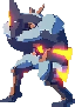
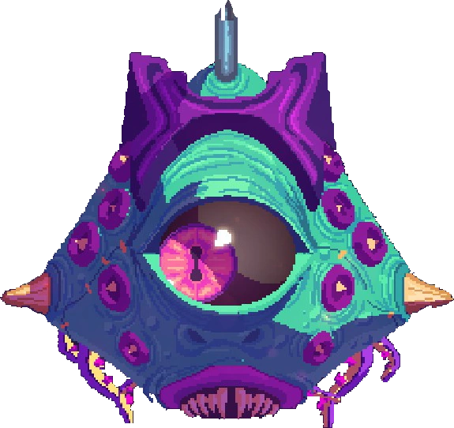
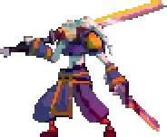
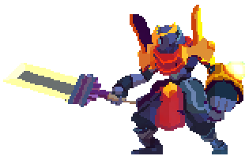
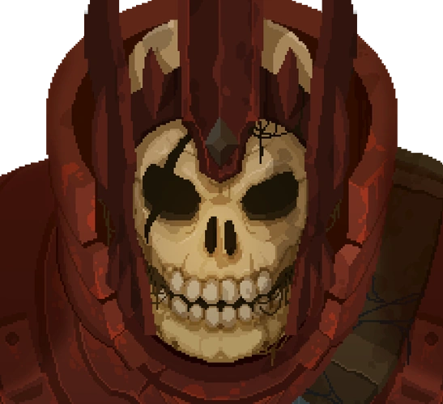
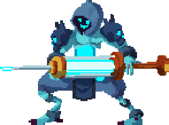

Кто такие главные боссы в игре Dead cells?
Главные боссы это самые сильные враги на локации которых ОБЯЗАТЕЛЬНО НУЖНО УБИТЬ
Все боссы игры Dead cells
Привратник

Награды за убийство
- 1 поб.:Руна испытания
- 2 поб.:Огниво(Оружие)
- 3 поб.:Тяжёлый арбалет(Оружие)
- 4 поб.:Колосажатель(Оружие)
- 5 поб.:Ближний бой(Мутация)
- 6 поб.:Боеприпасы(Мутация)
- 7 поб.:Охлаждение чувств(Мутация)
Местонахождение
Чёрный Мост
Информация
Привратник (The Concierge) – большое тело человекоподобной формы с выпирающими в спине костями и видными в ногах, шее. Части тела серого и ярко-серого цвета, кроме рук и частей головы. Сами руки не имеют пальцев и состоят из жёлтого светящегося пика. Голова овальная со светящимся жёлтым прямоугольным проёмом по центру. Охраняет вход в деревню на сваях, дремлющий храм и расколотые святилища.
Способности
- Атака острым окончанием руки
- Защитная аура - становится на время неуязвимым. (Только во время перехода между фазами)
- Калечащая аура - наносит урон кровотечения при нахождении в ней
- Ударная волна - по земле проходится волна огня
- Прыжок в сторону персонажа
Прочее
- Босс ускоряется по мере траты здоровья
- При минимальном количестве здоровья может совершать быстро несколько атак, например ударная волна и наскок
Лор
До того как заразится Хворью, Привратник был надзирателем тюрьмы по имени Кастейн. Он отвечал за охрану моста и тюремную стражу. Кастейн получил секретный приказ от Короля, дающий ему право усиленно контролировать входы и выходы в тюрьму и оставлять людей в заключении даже после того, как они отбыли свой срок. Король настаивал на том, чтобы Кастейн не дал заражённым жителям деревни возможность вернутся в свои дома. Кастейн попросил жителей сообщать о любых признаках заражения или странном поведении вопреки приказу, что вызвало недовольство Короля. Подразумевается что Кастейн брал взятки и частично, по своей воле, не подчинялся приказам Короля (развешивал на стенах своих личных канцелярий указы, о которых Король приказывал молчать). Он поддерживал праздный образ жизни (О чём свидетельствует шезлонг в домике на вершине Тюремных башен), а также имел несколько канцелярий на острове, в частности в Тюремных камерах, Тюремных башнях, Недрах тюрьмы и на Тропе обречённых. У Кастейна была книга «Управление тюрьмой для чайников». Одна из глав в ней - «Строительство моста».
Конъюктивиус

Награды за убийство
- 1 поб.:Щупальце(Оружие)
- 3 поб.:Проклятый меч(Оружие)
- 4 поб.:Высокая кухня(Мутация)
- 5 поб.:Глоток воздуха(Мутация)
- 6 поб.:Продвинутая кузница(Мутация)
Местонахождение
Невыносимая гробница
Информация
Конъюктивиус (Conjunctivius) — Большое, странное существо голубого оттенка, с фиолетовыми пятнами и торчащими из них шипами.
Способности
- Рывок. Останавливается на месте, приицеливается по направлению к игроку и делает рывок, выпуская шипы
- Обстрел. Глаз становится зеленым, стреляет кислотными снарядами в 8-ми направлениях
- Электрическое поле. При нахождении игрока рядом, останавливается на месте и испускает электрическое поле вокруг себя
- Щупальца. Опускает все платформы, становится неуязвимым, призывает щупальца
- После каждой стадии атаки щупальцами, обстрел становится сильнее. С каждым разом прибавляются выстрелы кислотными снарядами, которые чередуются в два направления
- Данная атака - это переход между фазами, который случается, когда у босса остаётся 75/50/25% ХП)
- Щупальца будут пытаться задеть игрока из под земли, одно из щупалец будет кататься по арене от одного края к другому
- После уничтожения одного щупальца, остальные активные щупальца в данный момент получат усиление по всем характеристикам
- Глобальный обстрел. Начиная с ~50% ОЗ может подняться вверх комнаты, и начать стрелять своими снарядами в разные стороны в большом количестве
Лор
Все начинается с безымянного трупа в Сточных канавах, зараженного Хворью. Одна из его рук мутировала в щупальце; зелёная слизь отделилась от неё и направилась к небольшому отверстию в стене. После этого Безымянный находит след из слизи, ведущий к пустому кокону и большому ходу, оставленного молодым Конъюктивиусом. Позже Главный герой находит ещё один труп и слизистый след, который приводит его к остаткам огромного кокона и гигантской дыры, проделанной Конъюктивиусом, когда она сбежала. Наконец, сообщение, оставленное стражниками указывает на то, как трудно было связать Конъюктивиуса и приковать её цепями в Невыносимой гробнице, что по видимому, было приказом Короля.
Хранительница времени

Награды за убийство
- 1 поб.:Скорость света(Оружие)
- 2 поб.:Классический временной костюм
- 3 поб.:Осколки льда(Оружие)
- 4 поб.:Ледяной арбалет(Оружие)
- 5 поб.:Спринтер(Мутация)
- 6 поб.:Зачарованная фляжка(Мутация)
- 8 поб.:Скорая помощь(Мутация)
Местонахождение
Часовая комната
Информация
Хранительница времени (The Time Keeper) — 2 босс в игре. Опасная противница, вооружённая двумя мечами. Впервые появилась в Brutal Update.
Способности
- Телепортируется то к Персонажу, то в другой конец комнаты (в зависимости от расстояния до персонажа)
- 1-3 атаки мечом
- Атака очередью из 1-5 сюрикенов в сторону игрока
- Когда Персонаж далеко, кидает маленький меч на цепи, при попадании притягивает Персонажа и оглушает его, и затем производит отбрасывающий удар
- Создаёт щит из сюрикенов, а потом выпускает их по разным траекториям. Иногда этот щит может появиться мгновенно при телепорте босса
- После наступления второй стадии, сверху комнаты начинают падать магические мечи (они некоторое время прицеливаются, затем падают). Это происходит, когда у босса осталось 50% хп и она находится на краю арены
- Когда Персонаж далеко, совершает рывок, с подготовкой (Жёлтый луч от босса вдоль комнаты. Во второй стадии может делать 2-3 рывка подряд)
Лор
Из письма, которое оставила Хранительница времени, можно узнать, что она отслеживала всех заражённых людей и монстров на острове, которые впоследствии были казнены. Все её записи обозначены как «День 1», что может означать, что одни и те же события повторяются снова и снова, и остров застрял в своеобразной временной петле. Количество записей о казнях уменьшается каждый день. Это даёт понять, что, возможно, из-за своей задачи Хранительница времени становилась все более обессиленной. Давным-давно, по просьбе Хранительницы времени Король построил Часовую башню, как указано в одном из загрузочных экранов игры.
Десница Короля

Награды за убийство
- 1 поб.:Двойное копьё(Оружие)
- 1 поб.:Сейсмический шок(Оружие)
Местонахождение
Тронный зал
Информация
Десница короля (The Hand of the King) — босс, добавленный в обновлении Update 6: The King's Hand. Главный страж, охраняющий Короля, имеет множество способностей, частично заимствованных у других врагов.
Способности
- 1 стадия
-
- Защита от снарядов
-
- Во время других действий ее нет
- Бросает гранаты (3 раза по 2-3 штуки)
- Один медленный удар копьём снизу вверх
- Рывок в сторону персонажа
-
- Наносит урон и сталкивает в яму
- 2 стадия
-
- 3 удара копьём
- Обманчивый удар
-
- Совершает один удар копьём, затем совершает прыжок с падением вызывающий земляную дрожь
- Призыв 3-х флагов (которые взрываются спустя время, если их не уничтожить)
- Призыв врагов (в том числе элитников, кол-во и тип зависит от кол-ва имеющихся с собой исходных клеток)
-
- Во время призыва не атакует и парит в воздухе в бесплотном состоянии
- Переход между стадиями
- 3 стадия
-
- Увеличивается частота всех атак босса
- Земляная дрожь: сначала босс подготовится, после чего выпустит 3 шоковые волны, наносящие урон и покрывающие весь пол арены
- Рывок становится двойным (сначала в одну, а потом в другую сторону)
Лор
Перед входом в Убежище стражника объясняется, что у него и Гиганта была сильная неприязнь друг к другу. Несмотря на это, они сходились в том, что им обоим не нравился Алхимик. Из комнаты Десницы в Королевском замке из записок можно выяснить, что Король многих подозревал в заговорах до такой степени, что казнил повара. Почти единственный кого вообще не подозревал Король - это Десница. Так же, сам Десница не обращал внимания на странный вкус еды.
Гигант

Награды за убийство
- 1 поб.:Убийца гигантов(Оружие)
- 2 поб.:Классический костюм Гиганта
- 3 поб.:Свисток гиганта(Оружие)
Местонахождение
Убежище стражника
Информация
Гигант (The Giant) — босс, добавленный в 12 обновлении. Ранее его можно было увидеть на фоне в стартовой комнате. Проход к боссу открывается только после 1-го убийства Десницы Короля. (подробнее)
Строение босса
Босс состоит из 3-х существ: правый и левый кулаки и глаз. Кулаки исполняют все атаки босса, за исключением лазеров из глаз. Разрушив одну руку, на неё можно будет взобраться, чтобы нанести урон вылетевшему из тела Глазу - он будет неподвижным и безобидным, по истечению 3-х секунд рука восполнит своё ОЗ и продолжит атаковать игрока. Уничтожение глаза будет считаться за победу над боссом.
Атака
- 1 фаза
-
- Горизонтальный удар рукой, покрывающий всю арену
- Выпускает из руки последовательно огненные шары
- Вертикальный удар рукой в игрока
- 2 фаза
-
- Вертикальный удар двумя руками сразу по центру.(Начинают падать обломки скалы)
- Выпускает из глаз лучи, ведя их от края платформы до центра, оставляя пространство для Персонажа и выпускает из руки последовательно огненные шары
- Когда набирает 3 заряда руки
-
- Если рука относительно игрока левая, то она выпускает огненные шары в разные стороны
- Если рука относительно игрока правая, то она совершает комбо из 5 вертикальных ударов рукой. При ударе по земле расходятся волны
Лор
Гигант состоял в королевской страже и был одним из немногих приближённых короля. После прихода на остров Хвори, Гигант стал критиковать методы короля по её подавлению. После этого король пронзил его Убийцей Великанов, и сказал позаботиться о нём стражникам, чтобы он никогда не проснулся. Но после убийства короля, можно предположить, что заклинание, наложенное на меч, было снято, и Гигант ожил.
Коллекционер

Награды за убийство
- 1 поб.:Шприц коллекционера
- 2 поб.: Костюм павшего Коллекционера
Местонахождение
Обсерватория
Информация
Коллекционер — это уже ранее знакомый нам НПС, предстоящий в образе босса в 12 обновлении. На текущий момент является финальным боссом игры, после убийства которого проигрывается вторая концовка.
Особенности
- Порядок атак босса внутри каждой его фазы не меняется. У всех остальных боссов он меняется в зависимости от их уровня здоровья
- Коллекционер - единственный босс, способный лечить себя
- Герой не способен нанести боссу больше чем 5% от его здоровья за один удар
- Всего у босса семь фаз. С оговорками
- Также убийство босса открывает путь к получению третьей концовки
Способности
- Последовательные атаки шприцом (от трёх до пяти)
- Вихревая атака, стоя на шприце (аналогично Разрывателю) - проезд 3 раза от одного края к другому
- Атака в прыжке, наносящая урон по полу на всей арене после небольшой задержки в воздухе (аналогично Голему из Дремлющего Храма или Деснице Короля). После этой атаки с потолка арены будут падать вниз бомбы, наносящие урон при приземлении
- Призыв над собой огненных шаров, летящих в игрока (3-5 снаряда)
- Атака огненным лучом во время парения над персонажем - 3 раза (подобно Библиотекарю)
- Атака огненными волнами в 2 стороны (3-5 волн)
- Восстановление здоровья (выпивание зелья) - происходит, если здоровье босса опустилось до определённой отметки. Босс выпьет 3 фляги будучи полностью неуязвимым к атакам, но 4-ю флягу можно будет у него выбить
Бой
1. Атака шприцом в прыжке 2. Атака серией рывков со шприцем 3. Вихревая атака со шприцем Когда босс закончил свою третью атаку, он телепортируется в другую комнату, в которой находиться три двери. Начинается промежуточная фаза. Сам Коллекционер будет находиться наверху, будучи неуязвимым. Из дверей выходит три монстра. В первой промежуточной фазе монстры будут из первых двух локаций. (Зомби, Бегун, Бомбардир, Лучник). Помимо этого с потолка так же будут падать бомбы, такие же как при атаке босса в прыжке. Однако они падают гораздо реже. После этого Босс телепортируется вниз и какое-то время не будет ничего делать, будучи уязвимым к атакам. Спустя несколько секунд, он телепортируется в следующую комнату и начнёт фазу дальнего боя. Состоит она из следующих атак, которые совершаются всегда в этой последовательности: 1. Атака огненными шарами 2. Атака огненными столбами 3. Атака лучами После окончания этих трёх атак, босс начинает фазу ближнего боя с тем же порядком атак. Помимо этого, по комнате теперь будет в случайном направлении будет летать железный шар, наносящий урон при столкновении с игроком. После неё идёт промежуточная фаза. В отличии от предыдущей, в этот раз вместо монстров из начальных локаций, будут появляться монстры из более поздних (Голем, Дикобраз, Рубака) После этой фазы идёт очередная фаза ближнего боя. Во время неё появляется второй железный шар, блуждающий по арене. Если вы не перевели босса на финальную фазу, то босс начнёт цикл вышеупомянутых фаз заново, пока вы не нанесёте ему достаточно количество урона. Помимо этого, на следующей фазе ближнего боя, появиться третий железный шар. А в последующих фазах дальнего боя, по краям арены будут находиться статичные огненные вихри, наносящие урон при касании. Когда вы наносите Коллекционеру достаточное количество урона, он телепортирует игрока в комнату с телескопом и начинает финальную фазу. В ней Коллекционер использует все свои атаки из фаз дальнего и ближнего боя, больше не телепортируясь в другие комнаты.